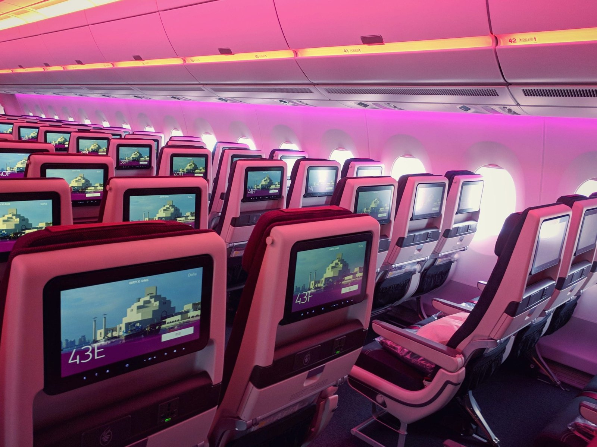
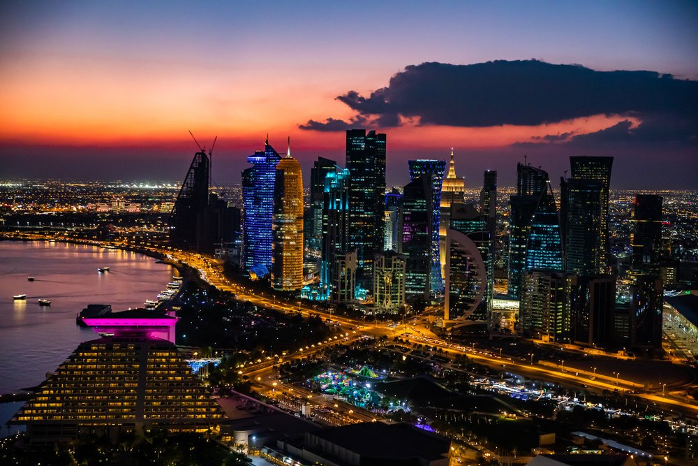
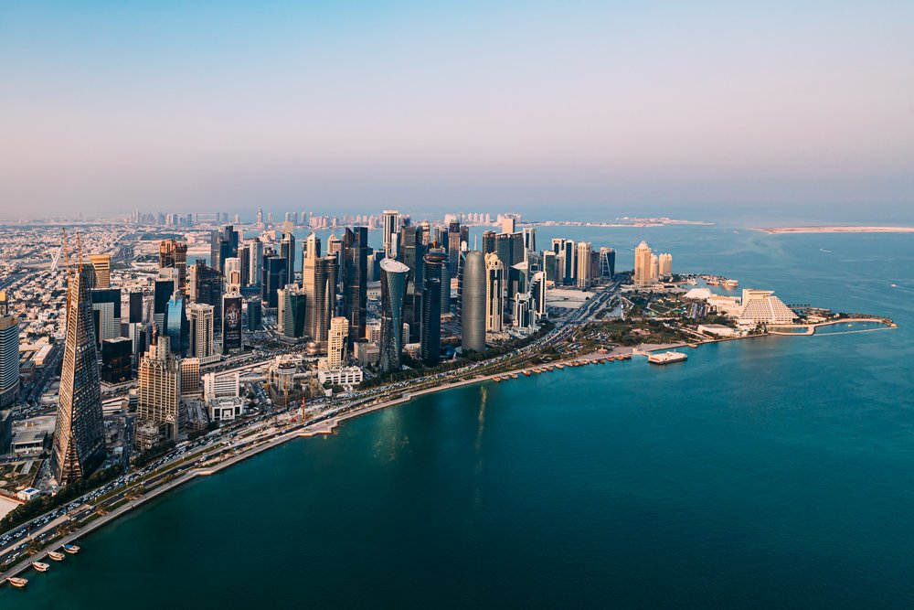
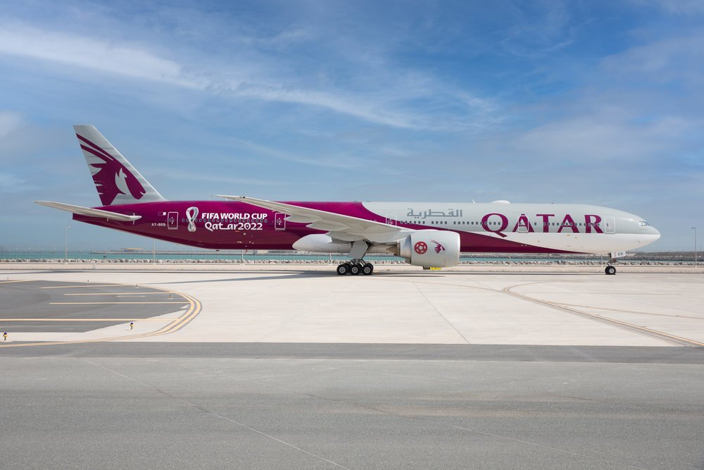

Option AA · Cabin interior
Pink-lit economy cabin as banner. Warm, atmospheric; magenta-to-ambient fade pairs naturally with the oxblood palette.
Interactive mockups for the Qatar Airways BI dashboard directory — landing-page variants, drillthrough detail options, and every design asset needed to build it in Power BI 2025. Click any card to preview in your browser.
The main "Find Your Dashboard" page. Each variant is a fully interactive mockup — click around, type in the search, select areas, sort the list, hover rows for tooltips. Layout and logic are identical across all five; only the header imagery differs.

Option A
Option B Option C
Option C

Option D
Option EThe drillthrough page shown when a user right-clicks a dashboard row. Header, metadata bar, related dashboards and refresh history are identical across all three; only the left-hand content card differs.
Option 1
Option 3
Implementation references for rebuilding the page inside Power BI Desktop 2025 — from first principles up to the interactive data-model and drillthrough design.
Drop these straight into Power BI Desktop. Right-click any link → "Save link as…" to keep filenames intact.